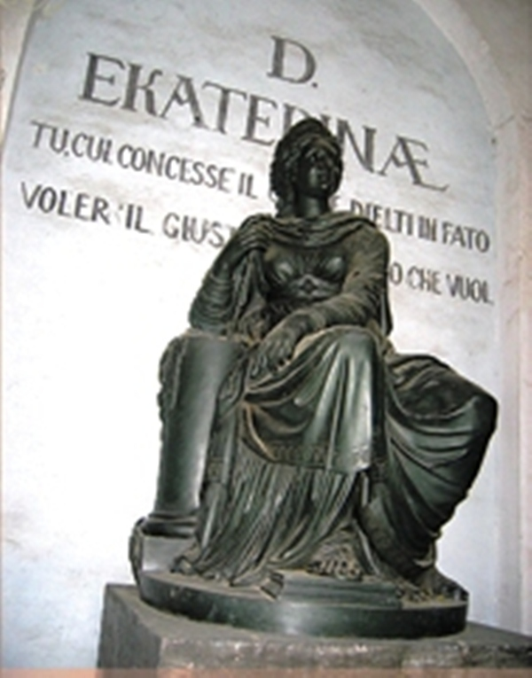

|  | Министерство культуры Российской Федерации Портал Культура.рф Проект «Образы России» |
Le musée-propriété Arkhangelskoye
L’église-monument de Caterina II.

Vers l’ouest de la colonne mémorable en l’honneur de l’arrivée dans le domaine de Nikolas I se trouve l’Eglise-monument de Caterina II construite en 1819 par l’architecte Evgraf Dmitrievitch Turin, c’est un petit pavillon à quatre colonnes achevé par un fronton. Dedans se trouve la statue de Caterina II en bronze représentée comme une déesse de l’ancien Rome de la justice Thémis. Est fabriquée dans le même atelier de Moscou de S.P. Campioni où ont été fabriquées aussi des colonnes mémorables, en 1825 l’auteur du modèle, le sculpteur connu russe Michail Ivanovitch Kozlovskyi. La figure noble de l’impératrice assise en diadème et couronne de lauriers est exécutée dans le style classique et marquée par la simplicité de la décision de composition. C’est une allégorie propre à cette époque glorifiant des vertus de la régente sage.
Sur l’église il y avait des inscriptions en latin et italien: sur la frise - «A Caterina Divine», et sur le mur de la niche figurent les lignes de la poème de Т. Таssо «Jérusalem libéré»: «Toi, à qui le ciel et le destin ont donné souhaiter le juste et avoir la possibilité d’obtenir le souhaitable».
Un des invités honnereux qui ont vu le monument a été l’empereur Nikolas I. En 1827 probablement ce monument a vu A.S.Pouchkin qui a été invité dans le domaine par le prince N.B. Iousoupov. Cela a été reflété en certaine manière dans les lignes de sa lettre «Au seigneur» dédiée au prince Nikolas Borisovitch Iousoupov:
«…Ayant franchi ton seuil,
Je me remets du coup à l’époque de Caterina».
C’est un des mémoriaux conservés jusqu’aux nos jours dans la région de Moscou en l’honneur de Caterina II.